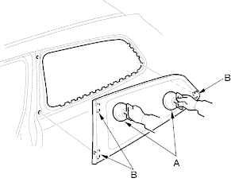

- Use suction cups (A) to hold the quarter glass over the opening, align it with the clips (B) and set it down on the adhesive. Lightly push on the quarter glass until its edges are fully seated on the adhesive all the way around. Do not open or close the doors until the adhesive is dry.

- Scrape or wipe the excess adhesive off with a putty knife or towel. To remove adhesive from a painted surface or the quarter glass, use a soft shop towel dampened with alcohol.
- Let the adhesive dry for at least 1 hour, then spray water over the quarter glass and check for leaks. Mark the leaking areas, let the quarter glass dry, then seal with sealant. Let the vehicle stand for at least 4 hours after quarter glass installation. If the vehicle has to be used within the first 4 hours, it must be driven slowly.
- Reinstall all remaining removed parts. Advise the customer not to do the following things for 2 to 3 days:
- Slam the doors with all the windows rolled up.
- Twist the body excessively (such as when going in and out of driveways at an angle or driving over rough, uneven roads).